## {{ page.title }}
---
## Terminology
- **interval**: a location on a sequence defined by a *start* and *end*
- **region**: often used as a synonym of *interval*
- **chromosome**: In the context of genomic intervals, *chromosome* is often used to indicate the *name of the sequence* on which an interval is defined, but this is really a fudging
- **interval set** or **region set**: a set of intervals/regions
---

---
## BED
### (Browser Extensible Data)
- originally designed by UCSC for the genome browser
- but, also often used for analysis
- a TSV file with one row per genomic region
- 3 required columns: `chrom`, `chromStart`, and `chromEnd`
Example of BED3 file:
```
chr1 15 250
chr2 38252 29502
```
---
## BED
- 9 additional optional fields:
- name: name of region
- score: range 0-1000
- strand: `+`, `-`, or `.`
- thickStart
- thickEnd
- itemRgb: display color (e.g. `55,0,0`)
- blockCount
- blockSizes
- blockStarts
---
## BED
- BED3 is a BED with the first 3 columns
- BED6 is `chrom`, `chromStart`, and `chromEnd`, `name`, `score`, `strand`
---
## BED-like formats
- narrowPeak
- broadPeak
- custom formats
- BTFs?
- BedGraph
---
## Terminology
- **coordinate system**: a set of sequence names and lengths
---
## What can be represented as an interval?
- ChIP-seq or ATAC-seq peaks
---
## Peaks

---
## What can be represented as an interval?
- ChIP-seq or ATAC-seq peaks
- SNPs (interval of width 1)
- genes and components (exons, introns, etc)
- other features (promoters, enhancers)
- TADs?
---
## Terminology
- **intersection**
- **union**
- **overlap**
- **flat**: a region set that is non-overlapping